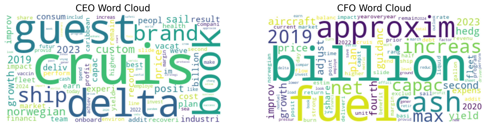
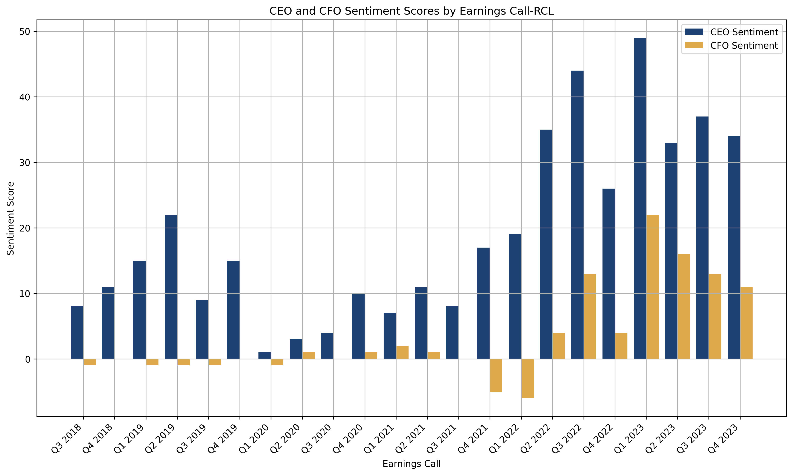
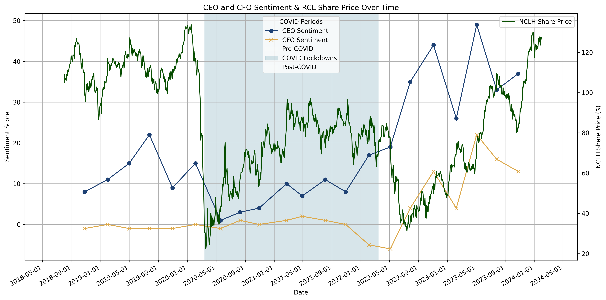
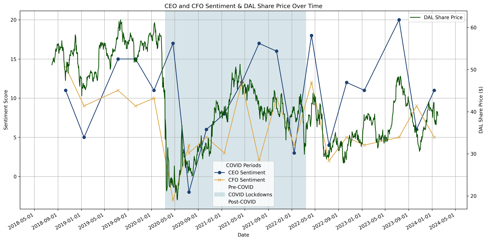
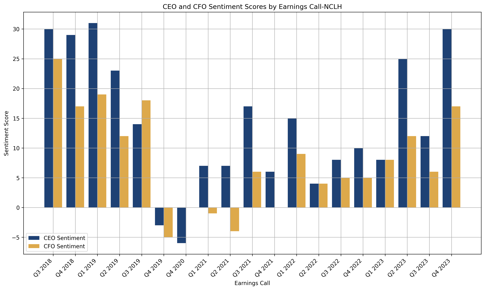
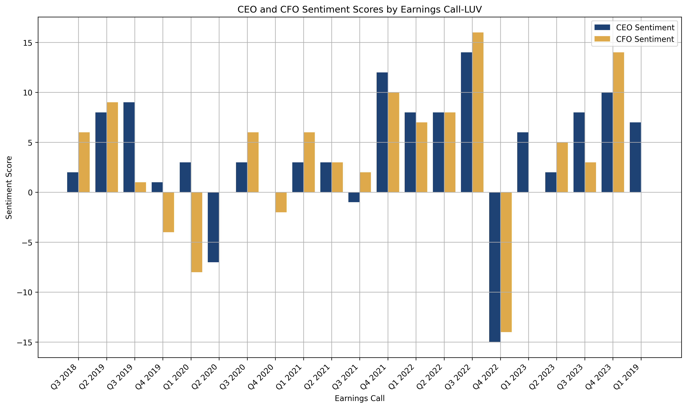
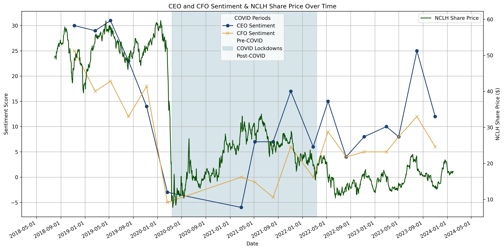
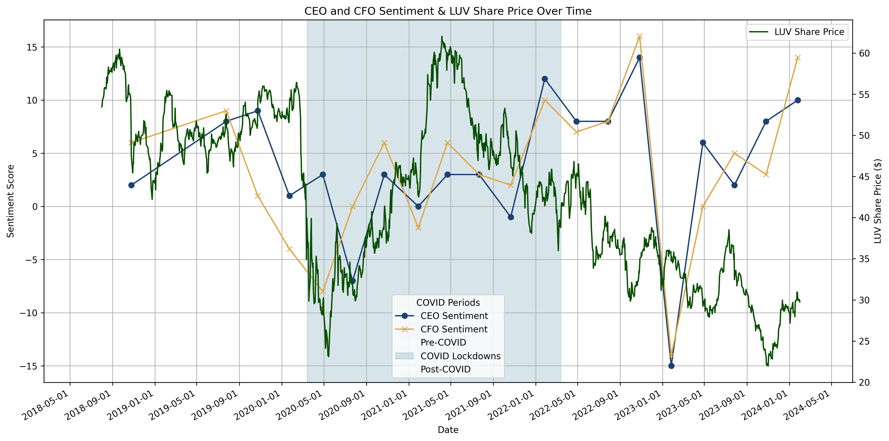

1. Introduction
1.1 Context: Quarterly Earnings Calls
Quarterly earnings calls are pivotal events where public company leadership engages with equity analysts, members of the media, and investors. Scheduled four times a year, these calls offer executives a crucial opportunity to update listeners on recent performance, future objectives and importantly, to directly address investors' questions, bolstering confidence in the firm. Transcripts of these calls, made publicly available post-event, are meticulously analysed by equity analysts for sentiment indicators not discernible from financial statements alone. The stakes are high on these calls. Institutional investors often time their trades around earnings call dates, with the direction and volume of these trades influenced by their interpretation of the call's sentiment.
1.2 CEO and CFO Responsibilities
The Chief Executive Officer (CEO) and Chief Financial Officer (CFO) are the principal speakers on a company's earnings call. The CEO, often seen as the public face of the company, is tasked with setting the strategic direction, vision and oversees the development of long-term strategies to enhance shareholder value. During earnings calls, the CEO focuses on the broader narrative of the firm, addressing market positioning, future growth opportunities, and responses to major events. Meanwhile, the CFO is responsible for financial stewardship, in charge of budgeting and forecasting. On earnings calls, the CFO delves into financial specifics with a more serious and quantitative tone, explaining revenue sources, cost levels, and the company's liquidity position.
1.3 Motivation
Earnings calls provide a rich source of unstructured verbal and textual data. The content of these calls, often influenced by economic conditions, can vary significantly. In light of the unprecedented impacts of the COVID-19 pandemic, this report expects to observe large shifts in the sentiment expressed by CEOs and CFOs during this period. Such shifts, reflecting the drastic changes in the business environment, are particularly crucial to understanding how leadership communication adapts in times of crisis. Natural language processing techniques can quantitatively assess the sentiment of CEOs and CFOs. The way these executives discuss company performance and their confidence levels can yield insights into the firm's future prospects. This report will use the firm's share price as a proxy for investor confidence, contrasting and regressing this data against the sentiment scores of each executive.
The study aims to investigate how CEO and CFO sentiments shift during a crisis and to determine which executive provides more accurate information in such times. The timeframe for this report spans 2018–2024, encompassing the period before, during, and after the COVID-19 lockdowns. The four companies under study, categorised as airlines or cruise operators, were chosen for the anticipated significant changes in their earnings call lexicon across the timeline. These companies faced substantial business disruptions during this period. However, the easing of COVID-19 restrictions and pent-up travel demand later fuelled significant recoveries in their share prices.
2. Literature Review
2.1 Challenges of the Dataset
Quarterly earnings reports present a unique textual blend, combining quantitative financial data discussion with qualitative strategic narratives. The language, typically formal and laced with technical financial terms and general business jargon, requires contextual understanding for accurate interpretation. Particularly significant in this report are the forward-looking statements within the earnings calls. Rich in sentiment, these statements are crucial for investors to assess leadership confidence and they play a vital role in shaping financial models, investment decisions, and stock recommendations.
2.2 Natural Language Processing Techniques from Literature
TF-IDF
To extract CEO and CFO sentiment from earnings calls, various NLP techniques were reviewed from academic and commercial sources. A well-known method used to evaluate the importance of words is Term Frequency–Inverse Document Frequency (TF-IDF). Chin and Fan, in their study of thousands of global company earnings calls transcripts from 2010–2021, utilised TF-IDF to weigh the impact of “significant words or phrases” across documents by “using the inverse of relative frequencies”. Key themes identified and TF-IDF scores can be tracked for specific time periods. This method is particularly relevant for analysing thematic prevalence in economic crises.[1]
Loughran-McDonald
The investigation into sentiment analysis tailored for financial texts led to the Loughran-McDonald (LM) sentiment word list. This method was identified from reading a paper comparing different NLP approaches for earnings calls by Kantos, Joldzic, Mitra and Hoang.[2] Developed by Loughran and McDonald in 2011, the LM dictionary was created by analysing language in 10-Q and 10-K filings with the Securities and Exchange Commission (SEC) between 1994 to 2008, incorporating around 5,000 words from these documents and over 80,000 from the Harvard Dictionary. Categorised as negative, positive, uncertainty, litigious, strong modal, and weak modal, the LM dictionary is widely used in various financial sentiment applications, from measuring the sentiment of annual reports to gauge financial distress in U.S. banks[3] to measuring the impact of financial news articles on stock price return.[4] This makes LM a suitable choice for this paper's analysis of earnings transcripts.
Deep Learning
More recent studies have explored deep-learning models to enhance traditional TF-IDF and bag-of-words methods. Albrizio, Dizioli, and Simon from the IMF, for instance, studied inflation expectations in earnings calls by creating a training sample from sentences featuring “inflation” and “expectation.” This data was fed into the GPT model to create a machine classification identifying whether a sentence referred to inflation expectations.[5] Although these deep-learning techniques, such as the GPT model, offer advanced capabilities, they are beyond the scope of this paper.
3. Data
3.1 Data Collection
Our research focused on analysing earnings call transcripts from two major cruise lines — Royal Caribbean and Norwegian Cruise Line — and two leading airlines — Delta Air Lines and Southwest Airlines. To gather the data, we utilised the financial services website Fool.com, a platform designed to help investors make informed decisions. Among its offerings, Fool.com provides direct links to quarterly earnings call transcripts for many companies. We developed a web scraping pipeline designed to navigate through each company's section on Fool.com, extract the links to all available earnings call transcripts, and collect metadata from each transcript. We moved through the webpage's elements to extract the first texts attributed to the CEOs and CFOs. We deliberately decided to only extract the first speeches of the CEO and CFO to prevent any potential bias that might arise from operators' questions subsequently asked during each earnings call.
The financial data collection process involved gathering historical share prices for each company, accomplished through the use of the yfinance Python library, a tool that provides simple access to financial data available on Yahoo Finance. For each company, we fetched historical data by defining a start and end date spanning from January 1, 2018, to February 1, 2024.
3.2 Data Preprocessing
To ensure the clarity and quality of the dataset before it undergoes analysis, we implemented the following preprocessing pipeline on raw text data:
- HTML tag removal — stripping the text of web-specific markup from scraping that could confound the analysis.
- Lowercasing — converting the text to lowercase to homogenize the dataset, eliminating variability caused by capitalisation.
- Special character & punctuation removal — characters that do not contribute to sentiment understanding are removed. Numbers are preserved as they are significant in the financial context.
- Stop word filtering — common words such as “like”, “is”, and “the” are removed.
- Stemming — words are condensed to their root forms to reduce dimensionality.
By adopting this preprocessing pipeline, we build a solid foundation for the analytical exploration ahead.
4. Methodology
4.1 TF-IDF
To gain insights into the key points of the CEOs' and CFOs' speeches, we employed a TF-IDF (Term Frequency-Inverse Document Frequency) analysis. This method highlights words that are prevalent in a specific document but not commonly used across all documents.
Term Frequency for a word is the number of times the word appears in a transcript, normalized by the total word count in the document. The TF for term \(i\) in document \(j\) is:
\[ tf_{i,j} = \frac{n_{i,j}}{\sum_k n_{k,j}} \]
where \(n_{i,j}\) is the count of occurrences of term \(i\) in transcript \(j\). Inverse Document Frequency is determined by taking the logarithm of the ratio of the total number of transcripts to the number of transcripts containing the word \(w\):
\[ idf(w) = \log\left(\frac{N}{df_w}\right) \]
where \(N\) is the total number of transcripts in the corpus. The TF-IDF score is the product of TF and IDF:
\[ tf\text{-}idf_{i,j} = tf_{i,j} \times idf(i) \]
Our first step involves aggregating all individual transcripts into a corpus encompassing texts from the CEO and CFO, providing the foundation for WordCloud visualizations. These visualizations graphically depict the relative importance of terms, with larger font sizes indicating higher TF-IDF scores and thus greater significance within the corpus.
4.2 Sentiment Analysis
We utilize the Loughran-McDonald Sentiment Analyzer, which leverages the Loughran-McDonald Master Dictionary — a comprehensive lexicon tailored for financial and economic text analysis. This dictionary categorizes words into sentiment categories including Negative, Positive, Uncertainty, Litigious, and Constraining. We built a class which utilizes this dictionary to quantify sentiment in the earnings call transcripts.
Our first analytical step involves the extraction of sentiment-indicative words from the Master Dictionary. Following the word extraction, the analyzer quantifies the presence of each sentiment within the texts. Mathematically, it is a sum of indicator functions — for each word \(w\) in text \(t\):
\[ \text{count} = \sum_{w \in t} \mathbf{1}_{w \in W_s} \]
where the indicator function \(\mathbf{1}\) equals 1 if word \(w\) belongs to the set \(W_s\) of sentiment-indicative words, and 0 otherwise. Net sentiment for each executive is then calculated as:
\[ \text{CEO Net Sentiment} = \text{CEO Positive Word Count} - \text{CEO Negative Word Count} \]
4.3 CEO and CFO Analysis
Our analysis is structured in two parts. The first part focuses on identifying shifts in CEO and CFO sentiment during economic crises compared to more stable periods. The second part examines whether the CEO or CFO offers more accurate predictions about the company's future performance. Overall, this study aims to provide investors with clearer insights into whose guidance — CEO or CFO — better indicates the future trajectory of the company.
To assess sentiment changes, we plot the sentiment scores of both CEOs and CFOs over time, providing direct insight into any significant shifts. This method also illuminates how their communication strategies might have adapted during the COVID-19 lockdown period, marked by economic instability and uncertainty.
Determining who provides more realistic projections about future company performance is more complex. To gain insights into whether the CEO's or CFO's sentiments more accurately reflect company performance, we regress the company's share price (used as a performance proxy) against their sentiment scores. This involves merging share price data with the CEO and CFO sentiment scores and the dates of earnings calls. The resulting dataset (see Table 4 in the Appendix) includes daily share price movements and the associated sentiment scores from the preceding earnings call. This setup allows us to analyse how the sentiments expressed during an earnings call correlate with subsequent share price movements until the next earnings call.
The regression equation is:
\[ \text{Share Price}_i = \beta_0 + \beta_1 \times \text{CEO Sentiment Score}_i + \beta_2 \times \text{CFO Sentiment Score}_i + \varepsilon \]
To understand the relationship between CEO and CFO sentiment scores and share price movements, we examine the coefficients \(\beta_1\) and \(\beta_2\) along with their respective levels of significance. A positive coefficient would suggest similarity between sentiment scores and share price direction. Conversely, a negative coefficient might indicate a misalignment or reflect dynamics not directly observable within the scope of this analysis.
We hypothesise that CFOs, on average, offer more realistic assessments of company performance. Therefore, we anticipate a positive and higher significant coefficient for the CFO sentiment score, indicating a positive correlation with the company's share price. In contrast, CEOs might exhibit over-optimism, a reflection of their role as visionary leaders guiding the company's strategic direction. If this hypothesis holds, it would manifest in the regression as an insignificant coefficient for the CEO sentiment score, suggesting no clear linear relationship between the CEO's sentiment and share price movements.
5. Results
5.1 CEO & CFO Sentiment Differences
Figure 1 illustrates the most relevant words used by CEOs and CFOs across various companies, with the top 20 words for each role detailed in Table 3 (see Appendix). The CEO word cloud includes terms like “guest”, “brand”, and “book”, indicating a focus on customer experience and branding, alongside strategic elements like “plan”, “capacity”, and “safety”. In contrast, the CFO word cloud features words such as “cash”, “billion”, “approx”, and “revenue”, highlighting a concentration on financial aspects. Additional terms like “cost”, “invest”, and “fuel” suggest a focus on cost management and operational efficiency.

Figure 1 — TF-IDF WordCloud: most important words used by CEO (left) and CFO (right)
The CEO's communication is more outward-looking, broadly covering marketing strategies, customer relations, and long-term growth. The CFO's language is inward-facing and financially oriented, emphasising cost control, risk management and economic forecasting.
Figure 2 presents sentiment scores for the CEO (blue) and CFO (orange) from Royal Caribbean Cruises (RCL) earnings calls, spanning Q3 2018 to Q4 2023. It shows variability in sentiment, with the CEO's sentiment score generally higher than the CFO's in most quarters. Scores below zero indicate a more negative sentiment for that call.

Figure 2 — CEO and CFO quarterly sentiment scores for Royal Caribbean (RCL)
As with Royal Caribbean, the CEO's sentiment is persistently higher for Delta Airlines, as shown in Figure 3.

Figure 3 — CEO and CFO quarterly sentiment scores for Delta Air Lines (DAL)
The line plots in Figures 4 & 5 track the sentiment scores of RCL's and DAL's CEO and CFO over time, with background colours marking different phases of the COVID-19 pandemic: Pre-COVID (white), COVID Lockdowns (blue), and Post-COVID (white). Notably, the CEO's sentiment dips significantly during lockdown, reaching its lowest in early 2020, with the sentiment score spread between the CEO and CFO tightening during the crisis.

Figure 4 — RCL: CEO & CFO Sentiment Score over time with COVID periods

Figure 5 — DAL: CEO & CFO Sentiment Score over time with COVID periods
5.2 CEO & CFO Sentiment Accuracy
Figures 6 and 7 show the share price alongside CEO and CFO sentiment of Royal Caribbean and Delta Airlines, respectively. A marked drop in share prices during the COVID-19 period, highlighted in light blue, signifies the catastrophic economic conditions. In these charts, we also observe a notable decline in CEO sentiment, with the lowest point reached in early 2020. Additionally, both figures display a secondary decrease around May/June 2022, likely associated with the energy crisis following the Russian invasion of Ukraine.
Figure 6 — RCL: CEO & CFO Sentiment Score & Share Price over time
Figure 7 — DAL: CEO & CFO Sentiment Score & Share Price over time
From Figure 6, it is apparent that the sentiment score of Royal Caribbean Cruise's CEO closely aligns with the company's share price, suggesting a potential correlation. The CEO's sentiment scores decreased during COVID-19 but began to rise again towards the end of the period. In contrast, the CFO's sentiment score did not decrease at the onset of the pandemic but instead increased as the pandemic neared its end.
Figure 7, however, shows more ambiguous patterns, making it challenging to discern clear associations between the sentiment scores of Delta Airline's CEO and CFO and the company's share price.
Regression Analysis
To quantitatively explore the relationship between different sentiment scores and share price, the results of the linear regressions are presented below.
| Dependent variable: RCL Share Price | (1) |
|---|---|
| CEO Sentiment Score | -0.573*** |
| (0.085) | |
| CFO Sentiment Score | 1.432*** |
| (0.168) | |
| Constant | 89.746*** |
| (1.392) | |
| Observations | 1,354 |
| R² | 0.051 |
| Adjusted R² | 0.050 |
| Residual Std. Error | 25.423 (df = 1351) |
| F Statistic | 36.368*** (df = 2; 1351) |
Note: *p<0.1; **p<0.05; ***p<0.01
In our first regression, we examine the relationship between Royal Caribbean's share price and the sentiment scores of its CEO and CFO. The CEO's sentiment score exhibits a negative correlation with the company's share price, while the CFO's sentiment score shows a positive correlation, both significant at the 99% confidence level. This finding supports our hypothesis that the CFO's statements are more closely aligned with the company's actual future performance. The negative coefficient associated with the CEO's sentiment score suggests either an overestimation of the company's performance by the CEO or the utilization of sentiment that is unrelated to the company's future performance.
| Dependent variable: DAL Share Price | (1) |
|---|---|
| CEO Sentiment Score | 0.106*** |
| (0.038) | |
| CFO Sentiment Score | 1.300*** |
| (0.052) | |
| Constant | 31.636*** |
| (0.529) | |
| Observations | 1,355 |
| R² | 0.329 |
| Adjusted R² | 0.328 |
| Residual Std. Error | 7.686 (df = 1352) |
| F Statistic | 332.125*** (df = 2; 1352) |
Note: *p<0.1; **p<0.05; ***p<0.01
The regression of Delta Air Lines reveals a positive association between the CFO's sentiment score and share price movements in the subsequent quarter. Similarly, a positive association is observed between the CEO's sentiment score and share price movements during the same period, however this correlation is weaker compared to that of the CFO's sentiment score. This again suggests that the CFO's sentiment tends to be a more accurate indicator of future performance in the following quarter.
Similar patterns are observed for Norwegian Cruise Line and Southwest Airlines (Tables 5 & 6 in the Appendix). In both cases, the CEO's sentiment score is negatively correlated and not statistically significant, indicating no strong association with share price movements. In contrast, the CFO's sentiment scores show a positive correlation with subsequent quarter share price movements, significant at a 99% confidence level.
The consistency across all four regressions suggests that CFOs generally provide a more accurate assessment of the company's future performance, as measured by share price. While confirming our hypothesis, we recognise the limitations of our approach and address potential improvements in the following section. It is important to note that our analysis should be interpreted as indicating associations and trends between sentiment scores and company performance, rather than as a tool for predicting share prices.
6. Limitations and Further Research
While our initial regression model establishes a direct association between sentiment scores and share prices, it lacks the depth needed to fully substantiate our hypotheses, as it doesn't consider the complexities of time-related dependencies and variables interactions over time.
To enhance the model's capacity to capture these dynamics, incorporating time lags into sentiment scores is a recommended next step, which would enable a more nuanced analysis of how sentiment influences share prices in the following quarters. The introduction of lags could also provide more information on how long the association between the sentiment scores and the share prices can last. Future research could explore Vector Autoregressive (VAR) models, where each variable is modelled as a linear function of its own past values as well as the past values of all other variables in the system, providing a more comprehensive analysis of inter-dependencies over time.
Refining the computation of sentiment scores is another area for enhancement. Normalising scores for CEOs and CFOs would mitigate biases originating from potential variations in speech length and style, ensuring a more equitable comparison. Implementing TF-IDF weighting to calculate sentiment scores could account for the varying significance of terms, acknowledging that certain words have more weight in conveying sentiment. Sentiment scores could then be calculated by determining the difference between the aggregated TF-IDF weights of positive and negative terms within each speech, thus providing a nuanced measure of sentiment. This approach would account for the varying importance of each term, offering a more sophisticated measure of sentiment.
These advancements in modelling techniques and sentiment score calculation would strengthen the empirical foundation of our analysis and better explain how executive sentiment correlates to share price movements.
7. Conclusion
The objective of this paper was to investigate the changes in CEO and CFO sentiment during crises and identify which individual provides more accurate information in such times. Earnings call transcripts were extracted from four companies, sentiment analysis was conducted on the CEO and CFO texts, and sentiment scores were regressed against share price data. Results showed that while CEOs typically had higher sentiment scores, the gap narrowed during crises. Moreover, our analysis revealed that, in general, CFOs tended to provide a more precise reflection of future company performance compared to share prices across all four companies. The limitations of the study were acknowledged and the report outlined potential directions for further research.
Bibliography
- Andrew Chin, Yuyu Fan (2023). Leveraging Text Mining to Extract Insights from Earnings Call Transcripts. Journal of Investment Management, Vol 21, No.1, pp 81–102.
- Christopher Kantos, Dan Joldzic, Gautam Mitra, Kieu Thi Hoang (2022). Comparative Analysis of NLP Approaches for Earnings Calls. Alexandria Technology, OptiRisk Systems.
- Priyank Gandhi, Tim Loughran & Bill McDonald (2019). Using Annual Report Sentiment as a Proxy for Financial Distress in U.S. Banks. Journal of Behavioral Finance, 20:4, 424–436.
- Xiaodong Li, Haoran Xie, Li Chen, Jianping Wang, Xiaotie Deng (2014). News Impact on Stock Price Return via Sentiment Analysis. Knowledge-Based Systems.
- Silvia Albrizio, Allan Dizioli, Philippe Simon (2023). Mining the gap: Extracting firms' inflation expectations from earnings call. IMF Working Papers 23/202, Washington D.C., International Monetary Fund.
- Cruise Industry News. (2022, August 7). CDC Cruise Ship Timeline: From No Sail to the End of COVID-19 Program. Available at: cruiseindustrynews.com
Appendix
Table 3 — Top 20 Most Important Words for CEO and CFO (TF-IDF)
| # | CEO | CFO |
|---|---|---|
| 1 | cruis | billion |
| 2 | guest | fuel |
| 3 | delta | approxim |
| 4 | book | cash |
| 5 | brand | increas |
| 6 | ship | 2019 |
| 7 | norwegian | net |
| 8 | custom | capac |
| 9 | 2019 | max |
| 10 | sail | aircraft |
| 11 | price | price |
| 12 | posit | yield |
| 13 | growth | hedg |
| 14 | experi | second |
| 15 | industri | guidanc |
| 16 | vacat | growth |
| 17 | record | adjust |
| 18 | deliv | 2023 |
| 19 | result | improv |
| 20 | billion | fourth |
Table 4 — Sample Dataset
| Date | Close | Title | CEO Sent. | CFO Sent. |
|---|---|---|---|---|
| 2019-01-15 | 102.03 | RCL Q3 Earnings Call | 8.0 | -1.0 |
| 2019-01-16 | 102.07 | RCL Q3 Earnings Call | 8.0 | -1.0 |
| 2019-01-17 | 103.40 | RCL Q3 Earnings Call | 8.0 | -1.0 |
| 2019-01-18 | 105.63 | RCL Q3 Earnings Call | 8.0 | -1.0 |
| 2019-01-22 | 104.94 | RCL Q3 Earnings Call | 8.0 | -1.0 |
| 2019-01-23 | 104.63 | RCL Q3 Earnings Call | 8.0 | -1.0 |
| 2019-01-24 | 106.02 | RCL Q3 Earnings Call | 8.0 | -1.0 |
| 2019-01-25 | 107.94 | RCL Q3 Earnings Call | 8.0 | -1.0 |
| 2019-01-28 | 108.40 | RCL Q3 Earnings Call | 8.0 | -1.0 |
| 2019-01-29 | 108.24 | RCL Q3 Earnings Call | 8.0 | -1.0 |
| 2019-01-30 | 116.87 | RCL Q4 Earnings Call | 11.0 | 0.0 |
| 2019-01-31 | 115.97 | RCL Q4 Earnings Call | 11.0 | 0.0 |
| 2019-02-01 | 114.29 | RCL Q4 Earnings Call | 11.0 | 0.0 |
| 2019-02-04 | 114.96 | RCL Q4 Earnings Call | 11.0 | 0.0 |
| 2019-02-05 | 114.20 | RCL Q4 Earnings Call | 11.0 | 0.0 |
NCLH and LUV — Sentiment by Quarter

Figure 8 — CEO and CFO quarterly sentiment scores for Norwegian Cruise Line (NCLH)

Figure 9 — CEO and CFO quarterly sentiment scores for Southwest Airlines (LUV)
NCLH and LUV — Sentiment & Share Price Over Time

Figure 10 — NCLH: CEO & CFO Sentiment Score over time with COVID periods

Figure 11 — LUV: CEO & CFO Sentiment Score over time with COVID periods
Figure 12 — NCLH: CEO & CFO Sentiment Score & Share Price over time
Figure 13 — LUV: CEO & CFO Sentiment Score & Share Price over time
In Figures 12 and 13, during the COVID-19 lockdown periods, a substantial decline in share price is observable, indicating the stress the pandemic placed on the cruise line and airline industries. The graphs also show the sentiment scores fluctuating over time. From these graphs there isn't a clear visual correlation between the sentiment scores and the share price movements, making it challenging to draw definitive conclusions about their relationship.
| Dependent variable: NCLH Share Price | (1) |
|---|---|
| CEO Sentiment Score | -0.035 |
| (0.062) | |
| CFO Sentiment Score | 1.172*** |
| (0.080) | |
| Constant | 20.421*** |
| (0.467) | |
| Observations | 1,345 |
| R² | 0.429 |
| Adjusted R² | 0.428 |
| Residual Std. Error | 11.467 (df = 1342) |
| F Statistic | 504.645*** (df = 2; 1342) |
Note: *p<0.1; **p<0.05; ***p<0.01
| Dependent variable: LUV Share Price | (1) |
|---|---|
| CEO Sentiment Score | -0.030 |
| (0.042) | |
| CFO Sentiment Score | 1.012*** |
| (0.058) | |
| Constant | 35.409*** |
| (0.593) | |
| Observations | 1,355 |
| R² | 0.183 |
| Adjusted R² | 0.182 |
| Residual Std. Error | 8.612 (df = 1352) |
| F Statistic | 151.914*** (df = 2; 1352) |
Note: *p<0.1; **p<0.05; ***p<0.01